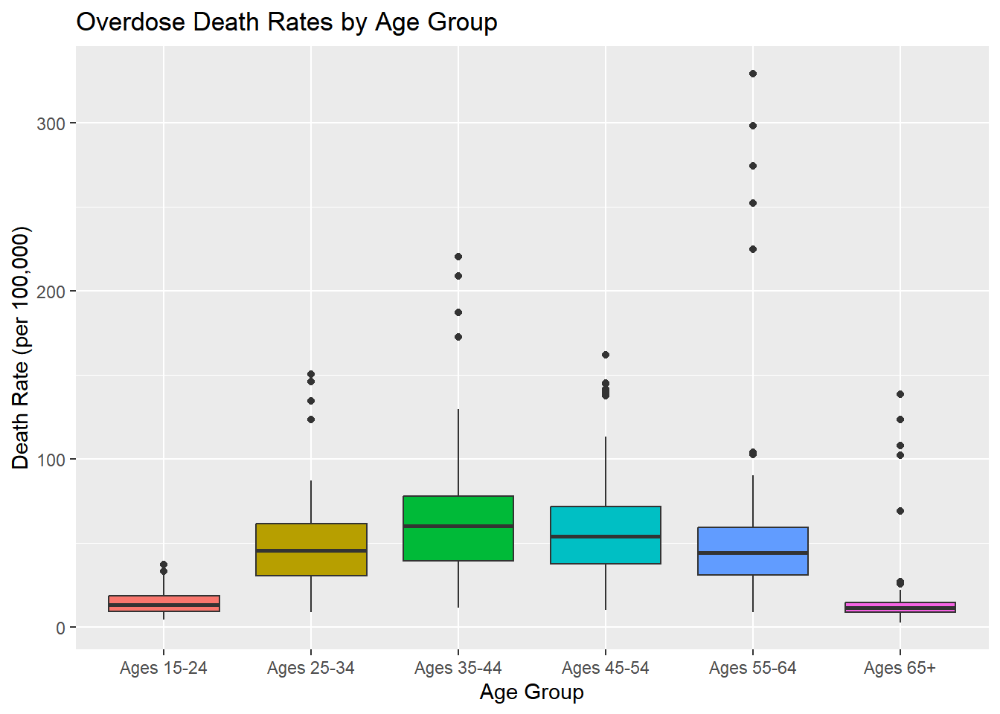

| Age Group 1 | Age Group 2 | Adjusted p-value | Significant? | |
|---|---|---|---|---|
| 1 | Ages 25-34 | Ages 15-24 | 0.0000 | Yes |
| 2 | Ages 35-44 | Ages 15-24 | 0.0000 | Yes |
| 3 | Ages 45-54 | Ages 15-24 | 0.0000 | Yes |
| 4 | Ages 55-64 | Ages 15-24 | 0.0000 | Yes |
| 5 | Ages 65+ | Ages 15-24 | 0.8118 | No |
| 7 | Ages 35-44 | Ages 25-34 | 0.0000 | Yes |
| 8 | Ages 45-54 | Ages 25-34 | 0.0005 | Yes |
| 9 | Ages 55-64 | Ages 25-34 | 0.3711 | No |
| 10 | Ages 65+ | Ages 25-34 | 0.0000 | Yes |
| 13 | Ages 45-54 | Ages 35-44 | 0.0837 | No |
| 14 | Ages 55-64 | Ages 35-44 | 0.0033 | Yes |
| 15 | Ages 65+ | Ages 35-44 | 0.0000 | Yes |
| 19 | Ages 55-64 | Ages 45-54 | 0.1097 | No |
| 20 | Ages 65+ | Ages 45-54 | 0.0000 | Yes |
| 25 | Ages 65+ | Ages 55-64 | 0.0000 | Yes |
Research Question 4
Are there significant differences in overdose death rate between different age groups?
Statistical Methods
We set the significance level at 0.05 for all tests.
Levene’s test shows unequal variances in overdose death rates across age groups (\(p<2.2e-16\)), so we perform a Welch ANOVA. Pairwise Welch t-tests are performed as well to compare overdose death rates between age-group pairs.
Results
The Welch ANOVA found statistically significant differences in overdose death rates across age groups (\(p < 2.2e-16\)).
The results of the pairwise t-test comparisons between age groups are summarized in the table below.

Analysis of Results
The 15-24 and 65+ age groups had the lowest overdose death rates and were not found to differ significantly from each other. In contrast, overdose death rates were significantly higher among adults age 25–64 compared to both groups. Mortality rates were relatively low in the 15-24 age group, then increased substantially, peaking among middle-aged groups, particularly individuals age 35-54, before dropping off sharply again in the 65+ age group. The 35-44 age group differed significantly from every age group except 45-54 and has the highest rates overall.
Several factors may contribute to this pattern of overdose mortality being concentrated among prime working-age adults. Individuals in middle adulthood may experience greater exposure to chronic stress, mental health challenges, or long-term substance dependence. The lower overdose death rates observed among younger individuals (ages 15–24) may reflect lower cumulative exposure to addictive substances or shorter durations of substance use. Similarly, the decline in overdose death rates among older individuals (ages 65 and older) may be a result of lower rates of illicit drug use or survivor effects. Differences in healthcare utilization or practices between age groups may contribute to differences in overdose death rates as well.